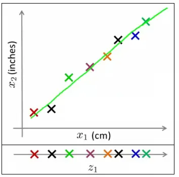
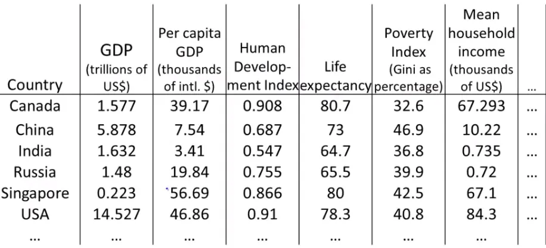
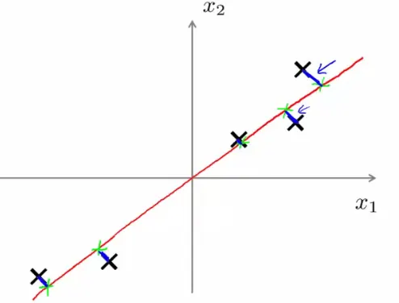

Principal Component Analysis (PCA) is a widely used technique in machine learning for dimensionality reduction. It simplifies the complexity in high-dimensional data while retaining trends and patterns.


Goal: The primary goal of Principal Component Analysis (PCA) is to identify a lower-dimensional representation of a dataset that retains as much variability (information) as possible. This is achieved by minimizing the projection error, which is the distance between the original data points and their projections onto the lower-dimensional subspace.
Projection Error: In PCA, the projection error is defined as the sum of the squared distances between each data point and its projection onto the lower-dimensional subspace. PCA seeks to minimize this error, thereby ensuring that the chosen subspace captures the maximum variance in the data.
Mathematical Formulation:
Let $X$ be an $m \times n$ matrix representing the dataset, where $m$ is the number of samples and $n$ is the number of features.
If $k$ is the desired lower dimension ($k < n$), PCA seeks the top $k$ eigenvectors of $\Sigma$.
Variance Maximization: An equivalent formulation of PCA is to maximize the variance of the projections of the data points onto the principal components. By maximizing the variance, PCA ensures that the selected components capture the most significant patterns in the data.

Principal Component Analysis (PCA) is a systematic process for reducing the dimensionality of data. Here's a breakdown of the PCA algorithm:
$$\Sigma = \frac{1}{m} \sum_{i=1}^{n} (x^{(i)})(x^{(i)})^T$$
Here, $\Sigma$ is an $[n \times n]$ matrix, with each $x^{(i)}$ being an $[n \times 1]$ matrix.
$$ [U,S,V] = \text{svd}(\Sigma) $$
The matrix $U$ will also be an $[n \times n]$ matrix, with its columns being the eigenvectors we seek.
Choosing Principal Components: Select the first $k$ eigenvectors from $U$, this is $U_{\text{reduce}}$.
Calculating Compressed Representation: For each data point $x$, compute its new representation $z$:
$$z = (U_{\text{reduce}})^T \cdot x$$
Here is the implementation of the Principal Component Analysis (PCA) algorithm in Python:
import numpy as np
def pca(X, k):
"""
Perform PCA on the dataset X and reduce its dimensionality to k dimensions.
Parameters:
X (numpy.ndarray): The input data matrix of shape (m, n) where m is the number of samples and n is the number of features.
k (int): The number of principal components to retain.
Returns:
Z (numpy.ndarray): The reduced representation of the input data matrix with shape (m, k).
U_reduce (numpy.ndarray): The matrix of top k eigenvectors with shape (n, k).
"""
# Step 1: Compute the covariance matrix
m, n = X.shape
Sigma = (1 / m) * np.dot(X.T, X)
# Step 2: Compute the eigenvectors using Singular Value Decomposition (SVD)
U, S, V = np.linalg.svd(Sigma)
# Step 3: Select the first k eigenvectors (principal components)
U_reduce = U[:, :k]
# Step 4: Project the data onto the reduced feature space
Z = np.dot(X, U_reduce)
return Z, U_reduce
# Example usage
if __name__ == "__main__":
# Create a sample dataset
X = np.array([[2.5, 2.4],
[0.5, 0.7],
[2.2, 2.9],
[1.9, 2.2],
[3.1, 3.0],
[2.3, 2.7],
[2, 1.6],
[1, 1.1],
[1.5, 1.6],
[1.1, 0.9]])
# Perform PCA to reduce the data to 1 dimension
Z, U_reduce = pca(X, k=1)
print("Reduced representation (Z):")
print(Z)
print("\nTop k eigenvectors (U_reduce):")
print(U_reduce)Is it possible to go back from a lower dimension to a higher one? While exact reconstruction is not possible (since some information is lost), an approximation can be obtained:
$$x_{\text{approx}} = U_{\text{reduce}} \cdot z$$
This approximates the original data in the higher-dimensional space but aligned along the principal components.
Here is the implementation of reconstructing the original data from its compressed representation in Python:
import numpy as np
def reconstruct(U_reduce, Z):
"""
Reconstruct the original data from the compressed representation.
Parameters:
U_reduce (numpy.ndarray): The matrix of top k eigenvectors with shape (n, k).
Z (numpy.ndarray): The compressed representation of the data with shape (m, k).
Returns:
X_approx (numpy.ndarray): The approximated reconstruction of the original data with shape (m, n).
"""
# Reconstruct the data from the compressed representation
X_approx = np.dot(Z, U_reduce.T)
return X_approxThe number of principal components ($k$) is a crucial choice in PCA. The objective is to minimize the average squared projection error while retaining most of the variance in the data:
$$\frac{1}{m} \sum_{i=1}^{m} ||x^{(i)} - x_{\text{approx}}^{(i)}||^2$$
$$\frac{1}{m} \sum_{i=1}^{m} ||x^{(i)}||^2$$
$$ \frac{\frac{1}{m} \sum_{i=1}^{m} ||x^{(i)} - x_{\text{approx}}^{(i)}||^2} {\frac{1}{m} \sum_{i=1}^{m} ||x^{(i)}||^2} \leq 0.01 $$
Let's implement the selection of the number of principal components ( k ) using the three methods mentioned:
import numpy as np
def compute_covariance_matrix(X):
"""
Compute the covariance matrix of the dataset X.
Parameters:
X (numpy.ndarray): The input data matrix of shape (m, n).
Returns:
Sigma (numpy.ndarray): The covariance matrix of shape (n, n).
"""
m, n = X.shape
Sigma = (1 / m) * np.dot(X.T, X)
return Sigma
def compute_svd(Sigma):
"""
Perform Singular Value Decomposition (SVD) on the covariance matrix.
Parameters:
Sigma (numpy.ndarray): The covariance matrix of shape (n, n).
Returns:
U (numpy.ndarray): The matrix of eigenvectors of shape (n, n).
S (numpy.ndarray): The vector of singular values of length n.
V (numpy.ndarray): The matrix of eigenvectors of shape (n, n).
"""
U, S, V = np.linalg.svd(Sigma)
return U, S, V
def average_squared_projection_error(X, U_reduce):
"""
Compute the average squared projection error.
Parameters:
X (numpy.ndarray): The original data matrix of shape (m, n).
U_reduce (numpy.ndarray): The reduced matrix of top k eigenvectors of shape (n, k).
Returns:
error (float): The average squared projection error.
"""
X_approx = np.dot(np.dot(X, U_reduce), U_reduce.T)
error = np.mean(np.linalg.norm(X - X_approx, axis=1) ** 2)
return error
def total_data_variation(X):
"""
Compute the total data variation.
Parameters:
X (numpy.ndarray): The original data matrix of shape (m, n).
Returns:
total_variation (float): The total data variation.
"""
total_variation = np.mean(np.linalg.norm(X, axis=1) ** 2)
return total_variation
def choose_k_average_squared_projection_error(X, U, threshold):
"""
Choose the number of principal components based on the average squared projection error threshold.
Parameters:
X (numpy.ndarray): The original data matrix of shape (m, n).
U (numpy.ndarray): The matrix of eigenvectors of shape (n, n).
threshold (float): The threshold for the average squared projection error.
Returns:
k (int): The number of principal components to retain.
"""
m, n = X.shape
for k in range(1, n + 1):
U_reduce = U[:, :k]
error = average_squared_projection_error(X, U_reduce)
if error <= threshold:
return k
return n
def choose_k_fraction_variance_retained(S, variance_retained=0.99):
"""
Choose the number of principal components to retain a specified fraction of the variance.
Parameters:
S (numpy.ndarray): The array of singular values from SVD of the covariance matrix.
variance_retained (float): The fraction of variance to retain (default is 0.99).
Returns:
k (int): The number of principal components to retain.
"""
total_variance = np.sum(S)
variance_sum = 0
k = 0
while variance_sum / total_variance < variance_retained:
variance_sum += S[k]
k += 1
return k
def choose_k_total_data_variation(X, U, variance_threshold):
"""
Choose the number of principal components based on the fraction of total data variation retained.
Parameters:
X (numpy.ndarray): The original data matrix of shape (m, n).
U (numpy.ndarray): The matrix of eigenvectors of shape (n, n).
variance_threshold (float): The fraction of total data variation to retain.
Returns:
k (int): The number of principal components to retain.
"""
total_variation = total_data_variation(X)
m, n = X.shape
for k in range(1, n + 1):
U_reduce = U[:, :k]
X_approx = np.dot(np.dot(X, U_reduce), U_reduce.T)
retained_variation = np.mean(np.linalg.norm(X_approx, axis=1) ** 2)
if retained_variation / total_variation >= variance_threshold:
return k
return n
# Example usage
if __name__ == "__main__":
# Create a sample dataset
X = np.array([[2.5, 2.4],
[0.5, 0.7],
[2.2, 2.9],
[1.9, 2.2],
[3.1, 3.0],
[2.3, 2.7],
[2, 1.6],
[1, 1.1],
[1.5, 1.6],
[1.1, 0.9]])
# Compute the covariance matrix
Sigma = compute_covariance_matrix(X)
# Perform SVD
U, S, V = compute_svd(Sigma)
# Choose k using average squared projection error
threshold_error = 0.1
k_error = choose_k_average_squared_projection_error(X, U, threshold_error)
print(f"Number of components (average squared projection error): {k_error}")
# Choose k using fraction of variance retained
variance_retained = 0.99
k_variance = choose_k_fraction_variance_retained(S, variance_retained)
print(f"Number of components (fraction variance retained): {k_variance}")
# Choose k using total data variation
variance_threshold = 0.99
k_data_variation = choose_k_total_data_variation(X, U, variance_threshold)
print(f"Number of components (total data variation): {k_data_variation}")The example usage demonstrates how to use these methods to choose the number of principal components ( k ) for a given dataset.
These notes are based on the free video lectures offered by Stanford University, led by Professor Andrew Ng. These lectures are part of the renowned Machine Learning course available on Coursera. For more information and to access the full course, visit the Coursera course page.